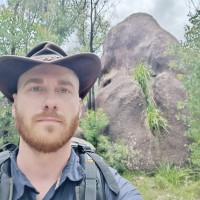

Marc A. Gali Labarias
PhD Physics



Career Summary
Originally from Catalonia, I completed my undergraduate studies in Mathematics and Physics at the Universitat Autònoma de Barcelona (UAB). My thesis explored the transformation of matter waves within the framework of Riemannian geometry. I earned my PhD in Physics from the University of Technology Sydney in 2019. My doctoral work focused on theoretical and computational modeling of the optical response of randomly structured materials, with potential applications in sustainable energy technologies. Following this, I joined CSIRO, where I contributed to the development of high-temperature superconducting electronics for quantum sensing. In 2023, I moved to Japan to join AIST, where I currently conduct research in quantum computing. I am proficient in several coding languages such as Python, Matlab and C among others. I am also an experienced Mathematics and Physics Tutor with a demonstrated history of working in the higher education industry.
Work Experience
Senior Research Scientist
AIST (Tsukuba, Japan) Apr 2025 – PresentPostdoctoral Fellow
AIST (Tsukuba, Japan) Oct 2023 – Mar 2025Senior Research Scientist
CSIRO (Sydney, Australia) Aug 2022 – Aug 2023Postdoctoral Fellow
CSIRO (Sydney, Australia) Jul 2019 – Jul 2023Education
PhD in Theoretical and Computational Physics
University of Technology Sydney (Sydney, Australia) Jan 2015 – Jun 2018B.S. in Physics
Universitat Autonoma de Barcelona (Bellaterra, Catalonia) Sep 2009 – Jun 2014B.S. in Mathematics
Universitat Autonoma de Barcelona (Bellaterra, Catalonia) Sep 2009 – Jun 2014Publications
PhD in Theoretical and Computational Physics
University of Technology Sydney (Sydney, Australia) Jan 2015 – Jun 2018Conferences and Seminars
PhD in Theoretical and Computational Physics
University of Technology Sydney (Sydney, Australia) Jan 2015 – Jun 2018Skills
- Python
- C
- Matlab
- Fortran
- Git
- SQL
Natural Languages
- English
- Catalan
- Spanish
- Japanese